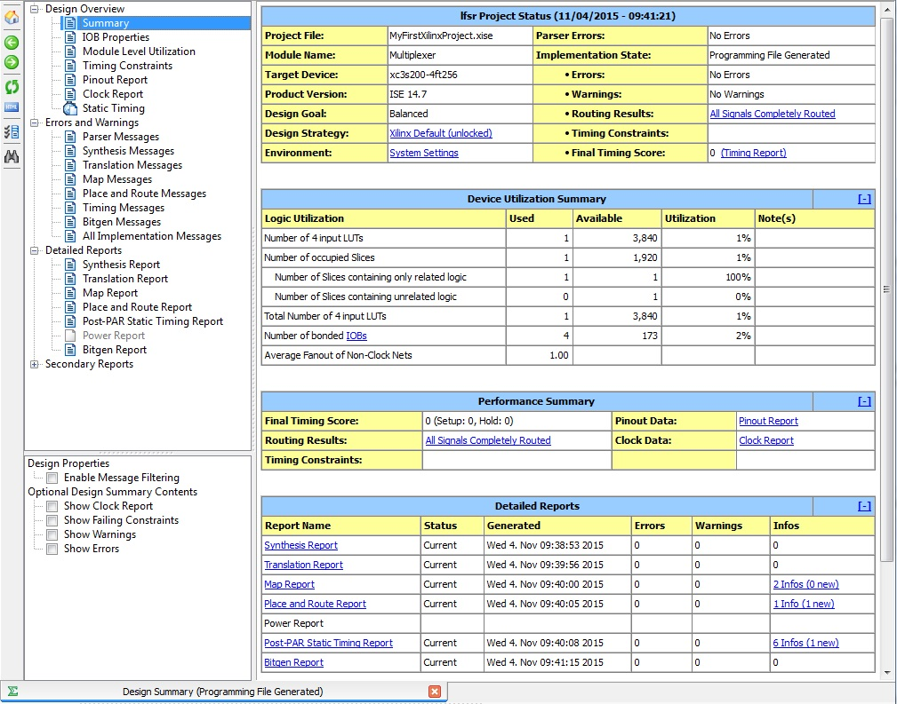
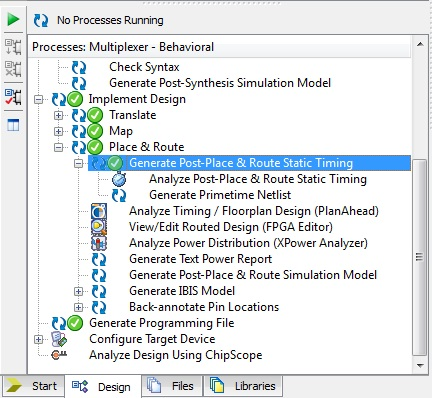
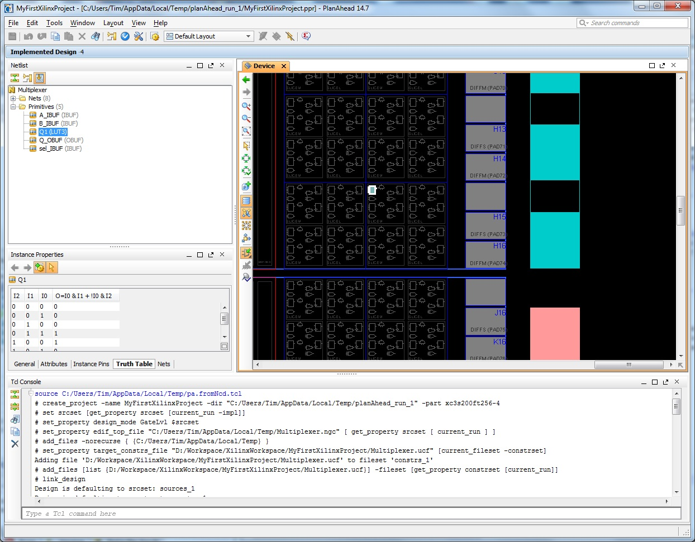

EEE6225 Systems Design
| Tutorial 1: Introduction to VHDL and Xilinx ISE |
| Place and Route |
Once the synthesis has completed successfully, a green tick will appear on the synthesis box and you can then implement the design. The synthesis stage produces a circuit of logical functions interconnected by routes. To implement the design, the functional blocks need to be mapped to the types of logic elements on the FPGA then placed at specific sites and finally their inconnections realised using physical routes on the device. This phase also looks closely at the timing and calculates whether the design will meet any of the timing or pin placement constraints that we have specified (we haven't imposed any timing constraints in the multiplexer example) and the pin placements should be correct. To do this next phase, double-click on the Implement Design item in the Processes window. Again success is indicated with a green tick. Lastly, double-click on the Generate Programming File item in the Processes window, after which you should see the green tick against that item too. If you get a question mark or cross icon then please contact a demonstrator for assistance. You may be prompted with a screen asking if you wish to submit design performance statistics to Xilinx, click on Decline you are prompted with a further dialog where you can turn this feature off (this is the recommended course of action). This process will have created a .bit file within the projects working directory. This file holds the FPGA configuration bit-stream for your design. The design is now albeit ready to transfer to the FPGA. |
| Reviewing your design |
Select the Design Summary display by clicking the Design Summary Tab or the icon on the toolbar. This windows allows easy access to all the reports produced throught synthesis and implementation of the design. Figure 1 shows a typical sucessful design overview summary. Clicking on the various report links allows viewing of timing and area usage performance of the design. Analysis of these reports is beyond the scope of this tutorial, but it should be notedthat the synthesis report only contains estimates and the post-place and route reports the most accurate figures. It is from these reports that the slice count and maximum clock speed can be obtained. The synthesis report, map report and place & route report also provide much useful information about your design and should be studied for WARNING messages and to make a judgement as to whether ISE has understood your design intention. |
|  Figure 1. Successful design overview summary |
If you explore (by expanding) the tree of options in the Processes window under Implement Design there are visualisation tools for timing (see Figure 2), floor-planning, fpga routed layout and power distribution together with generation of various simulation models. |
|  Figure 2. Post place and route tools |
For example a visualisation of the design can be obtained from the PlanAhead tool. To view this Implement Design > Place & Route > Analyze Timing / Floorplan Design (PlanAhead). A graphical display should be presented (see Figure 3) this tool can also be used to assign area constraints to your design (more advanced topic beyond this tutorial - ask a demonstrator when your design is close to completion). |
|  Figure 2. Plan Ahead showing element selected for the Multiplexer design. |
| Continue on to Programming the FPGA |